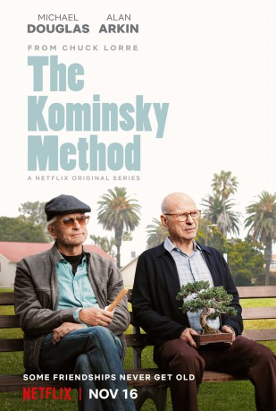

")
 
 IMDB-Wertung: 8.2 / 10
IMDB-Wertung: 8.2 / 10  Metascore:
Metascore: 
Schauspieler Sandy Kominsky (Michael Douglas) war vor langer Zeit einmal kurz zu allgemeiner Bekanntheit gekommen. Als seine Karriere im Rampenlicht ebenso schnell wieder zu Ende war, machte er sich als Schauspiellehrer in Hollywood einen Namen. Sein langjähriger Agent Norman (Alan Arkin) muss schon seit Jahrzehnten Kominskys Launen ertragen.
Jahr: 2018
Dauer: 33 Minuten
FSK: 12
Land: USA Studio: NetflixTonspuren: DD5.1 - ,
Untertitel: Deutsch, Englisch,
Auflösung: 720p (1280x720) Größe: 574 MB
Regisseur:  Andy Tennant, Beth McCarthy-Miller, Donald Petrie, Chuck Lorre
Andy Tennant, Beth McCarthy-Miller, Donald Petrie, Chuck Lorre
Drehbuch: Chuck Lorre, Alan J. Higgins, David Javerbaum
Soundtrack:
Darsteller:
 Michael Douglas als Sandy Kominsky, 8 episodes, 2018
Michael Douglas als Sandy Kominsky, 8 episodes, 2018 Alan Arkin als Norman Newlander, 8 episodes, 2018
Alan Arkin als Norman Newlander, 8 episodes, 2018 Sarah Baker als Mindy Kominsky, 8 episodes, 2018
Sarah Baker als Mindy Kominsky, 8 episodes, 2018 Nancy Travis als Lisa, 8 episodes, 2018
Nancy Travis als Lisa, 8 episodes, 2018 Lisa Edelstein als Phoebe, 4 episodes, 2018
Lisa Edelstein als Phoebe, 4 episodes, 2018 Danny DeVito als Dr. Wexler, 2 episodes, 2018
Danny DeVito als Dr. Wexler, 2 episodes, 2018 Ann-Margret als Diane, 2 episodes, 2018
Ann-Margret als Diane, 2 episodes, 2018 Jay Leno als Jay Leno, 1 episode, 2018
Jay Leno als Jay Leno, 1 episode, 2018 Elliott Gould als Elliot Gould, 1 episode, 2018
Elliott Gould als Elliot Gould, 1 episode, 2018 Brandon Morales als Shepherd, 1 episode, 2018
Brandon Morales als Shepherd, 1 episode, 2018 Rex Linn als Ed, 1 episode, 2018
Rex Linn als Ed, 1 episode, 2018 Lauren Weedman als Director, 1 episode, 2018
Lauren Weedman als Director, 1 episode, 2018 Corbin Bernsen als Corbin Bernsen, 1 episode, 2018
Corbin Bernsen als Corbin Bernsen, 1 episode, 2018 Lainie Kazan als Norman's Grandmother, 1 episode, 2018
Lainie Kazan als Norman's Grandmother, 1 episode, 2018 Jason Kravits als Woody Littlehales, 1 episode, 2018
Jason Kravits als Woody Littlehales, 1 episode, 2018 George Wyner als Rabbi, 1 episode, 2018
George Wyner als Rabbi, 1 episode, 2018 Raymond Ma als Mr. Liu, 1 episode, 2018
Raymond Ma als Mr. Liu, 1 episode, 2018Datei: X:\HD-Serien\Kominsky Method S01\Kominsky Method S0101.mkv seit 04.02.2019
Festplatte: HD Serien(I-ST)
 Es gibt insgesamt 182 Filme in der Gruppe 'HD-Serien'
Es gibt insgesamt 182 Filme in der Gruppe 'HD-Serien'